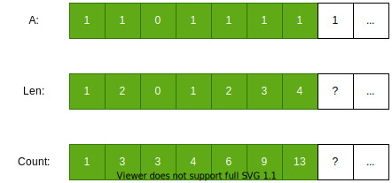

上周末试着参加了一下 LeetCode 的周赛。
文章是 7/10 写的，所以这里指的是 7/5 的周赛
90 分钟，总共四题，分别一题简单，两题中等，一题困难。在我看来，第 1、2 题都算简单，第 3 题的中等我很多年前做过；只有第 4 题最优解要用到比较少见的算法，不过还是有网友暴力解通过。
就是这样的难度，第 2 题一开始没反应过来，先做后面，然后在第 3 题耗费了太多时间（约 1H），留给 2 、4 的时间都不太够，最后只 AC 1、3。相比之下，最快的参加者 17 分钟全部 AC。自尊心受到暴击，只能用刚刚恢复刷题，太生疏给自己台阶。做的时候感觉很顺畅，回头一看时间，都不知道怎么跑掉的。是中年人反应迟钝了吗？
不管怎样，3、4 题还是值得说一下的。今天先讲第 3 题，对应 1504 号。
英文：https://leetcode.com/problems/count-submatrices-with-all-ones/
中文：https://leetcode-cn.com/problems/count-submatrices-with-all-ones/
题意
一句话概括
给定由 0, 1 组成的矩阵，求 元素全是 1 的子矩阵 的数量。
例子
|
|
更多例子看测试用例
约束
- 行列最小 1，最大 150
- 矩阵元素只有 0 和 1
为了后续方便讨论，约定行数为 R，列数为 C。
测试代码先行
|
|
动态规划
暴力做法非常简单，一句话带过：首先 O(RC) 遍历左上角选点，然后 O(RC) 遍历右下角选点，再用 O(RC) 判断选定的矩阵是否全 1，时间复杂度为 O((RC)^3) ，空间复杂度 O(1)。（提醒：R 是行数，C 是列数）也许数据弱的话能 AC（我没试），比赛时间不够也许可以蒙一下，但没有讨论价值。
这道题明显有大量重复子问题，稍有经验都应该马上往动态规划上靠。关于动态规划的基础常识，可以先看之前的文章：《LeetCode 题解： Regular Expression Matching》，以后考虑围绕基础知识点写一些文章。
想到 DP 容易，难点是定义子问题，状态如何转移。多年前那次和这次，都第一时间知道是 DP 的题，仍然耗费不少时间想具体的状态转移方程。（虽然做过，相似的矩阵题太多，过了一阵才认出来，又花了一点时间回想有哪些方案。）
思考方向
最明显的重复运算，是对候选矩阵做全 1 判断。能否记录某些中间状态，根据少数点是否为 1， 结合这些中间状态得到下一个状态，避免前面判断过的 位置 再来一遍？
根据以往做 DP 的经验，一般是 dp[r][c] 代表到 r 行 c 列为止的某个结果。例如，我们定义两个矩阵 width[r][c] 和 height[r][c] 代表以 (r, c) 为右下角的矩阵的最大宽度和最大高度，从左上到右下运算。有没有可能从前面的状态，推算出以(r, c) 为右下角的极大矩阵呢？
绿色表示已经处理过的点，白色表示待处理的点。下同。
很难。我们找极大矩阵，是因为知道极大矩阵的大小，就很容易计算它有多少个子矩阵。但极大矩阵可以有很多个，光凭最大宽度和最大高度两个信息，无法计算出这么多个极大矩阵。那还要记录多少信息才够？
极大矩阵是指，这个矩阵在边界上碰到了 0，没办法变得更大了。但它不一定是最大的矩阵。
记录最大宽和最大高之所以很难用得上，是因为它们很可能不是在同一个矩阵上记录的，也很难用来计算那么多个极大矩阵。
换一个角度看为什么这么难。假定可以用 O(1) 完成状态转移，计算出 (r, c) 点为右下角的所有极大矩阵，由于右下角只有 O(RC) 种情况，换言之时间复杂度从 O((RC)^3) 降到了 O(RC)，优化幅度非常大 。但多个极大矩阵真的能用 O(1) 时间就计算出来吗？要借用哪些中间结果？
事实上，这个方向是可行的。但我们先从简单一点的开始。
压缩 + DP
二维的情况复杂，是因为长宽有多种组合；如果长宽不能同时达到最大，就会产生大量极大矩阵。
那就 从一维开始找规律 。
一维问题：全 1 子段数

一维的情况，问题简化成『统计全 1 子段数』，其中任意长度不为 0 的连续区间 ，都是子段（interval）。假定数组长度为 N，Brute-Force 的做法是，O(N) 选左端点，O(N) 选右端点，O(N) 判断是否全 1，时间复杂度 O(N^3)。
这时用 DP，状态转移方程很好写。假定有一维数组 A，里面同样是 0 或 1。定义 L[i] 为 以第 i 个元素为右边界的子段的最大长度（换言之，连续多少个 1），很容易得到
$$
\left{
\begin{array}{lr}
Li = L{i-1} + 1, & (A_i = 1)\
L_i = 0 & (A_i = 0)
\end{array}
\right.
$$
大白话就是，遇到 1，最大长度加 1；遇到 0，长度清零 。
再定义 C[i] 为到 第 i 个元素为止，累计的的字段数，状态转移方程为
$$
\left{
\begin{array}{lr}
Ci = C{i-1} + L_i, & (A_i = 1)\
Ci = C{i-1} & (A_i = 0)
\end{array}
\right.
$$
大白话就是，遇到 1，就增加『当前子段最大长度 L[i] 这么多个子段数』；遇到 0，统计数字不变。为什么是 L[i] ？因为 以 A[i] 为右端点的子段刚好是 L[i] 个，分别为长度为 1、长度为 2、长度为 … 长度为 L[i] 。
DP 跟 BF 相比，省略了重复运算，但思维不严谨的话，很容易出现重复或者遗漏。我们来确认一下，是否每个左端点和右端点的组合都包含了一次：对于右端点，每个 A[i] = 1 ，都访问且只访问了一次；在确定右端点之后，每个和右端点连续（中间没有 0）的左端点都刚好统计了一次（L[i] 个）。
对于每个元素 A[i]，分别需要常数时间计算 L[i] 和 C[i] ，时间复杂度为 O(N)。由于 L 和 C 都只和当前元素和前一个状态相关，只需保留最后一个状态，没有必要保存数组，空间复杂度为 O(1)。
代码非常简单
|
|
二维问题：压缩成一维
一维的情况简单，我还是尽量详细地讲，因为这是理解接下来内容的基础。
对于高度为 2 的矩阵，求全 1 子矩阵数。这些子矩阵，高度要么为 1，要么为 2。对于高度为 1 的子矩阵，情况退回到 一维，分别对每一行应用一维的算法即可 。而对于高度为 2 的子矩阵，可以『压缩』成高度为 1，再应用一维的算法。

以此类推，任意高度的子矩阵，也可以压缩成一行处理 。而且，R 行压缩成一行，并不需要每次从头开始压缩；只需要在前 R - 1 行的结果上，再合并一行 。
|
|
O(R) 遍历开始行，O(R) 遍历结束行，O(C) 的时间压缩每一行并应用一维的算法，时间复杂度为 O(R^2 * C)。只用了一行的额外空间保存压缩行，空间复杂度为 O(C)。由于 R 比 C 遍历多了一层，如果行数比列数大得多，可以将行列交换运算。代码比较麻烦，不再展开。
回到正确性的问题，是否不重不漏？横向在一维时已经讨论过了。纵向，O(R^2) 把所有开始行和结束行的组合都遍历了。换言之，所有的左上角和右下角的组合，都刚好地访问了一遍。
单调栈 + DP
上述解法已经相当优秀，将六次方的 BF 解法，降了 3 个阶。（这里为了方便讨论，把 R、C 看做相近的数量级，都当成 N 处理，相当于从 O(N^6) 降到了 O(N^3) 时间复杂度）
当年第一次遇到这道题，我甚至都没能一下子想到这种办法，想通时已经不够时间实现和调试。还是事后同事 Lucy 跟我们讲了思路。之后很长一段时间，没有再细想，把这当成最优解。
直到这次，顺便逛了一下讨论区，居然发现还能 O(RC) ！？
以下解法并非我的原创，而是看了 LeetCode 美国站讨论区后，根据网友提供的思路，重新实现和用自己的话解释一遍。主要为了分享和加深理解。
平时做的答案，其核心思想，其实也是学来的（主要是大学算法课）。毕竟常见，不需要特别声明。
这次的解法比较绕，不敢掠美，特此声明。
子问题：分割极大矩阵
我们回到一开始想到用 动态规划 时提出的问题：『能不能遍历为 1 的点作为右下角，结合少量中间状态，算出新的中间状态，并逐渐推导出答案？』
这个问题难在子问题和中间状态的定义。怎么定义，中间状态定义多少个，才能应付最多时跟 R、C 同量级的极大矩阵？
我们把问题简化，先不想怎么判断和划分，假定已经找到了一个 r 行 c 列的极大全 1 矩阵，里面有多少个 包含右下角的点 的子矩阵？
答：r x c 个。
包含右下角（最后一行结束），子矩阵高度（开始行）有 r 种可能；包含右下角（最后一列结束），矩阵宽度（开始列）有 c 种可能。组成起来有 r x c 种 子矩阵。换言之，只要找到以当前点为右下角的极大子矩阵，就能直接算出以此为右下角的全部子矩阵数量 。
难点在于极大子矩阵根本不止一个，叠在一起可能是锯齿状的，也可能是驼峰状的，极难记录和统计。不过只要用递归分治的思想划分一下子问题，难点就变简单了。
我们定义 C[i][j] 为 『以点 (i, j) 为右下角的子矩阵数量』。mat[i][j] 为 0 时，这个点不能构成任何子矩阵，所以只讨论为 1 的情况。如图所示，以第一个白色点 (4, 5) 为右下角的极大子矩阵，一共有 3 种宽高组合（1x6, 2x4, 4x2），它们重叠在一起，构成了一个不规则的形状。将其纵向划分成 3 个互不重叠的 3 个矩阵 X, Y, Z。（不一定是 3 个，实际可能更多，最多时可以分成每列一个）
那么 C[4][5] 就等于 X （包含右下角）的子矩阵数（4x2），加上 C[4][3]。之所以这样算，是因为所有以 (4, 3) 为右下角的子矩阵，都可以列数加 2 ，变成以 (4, 5) 为右下角。通过这样划分子问题，无论有多少个极大子矩阵，我们只需要计算包含当前右下角最右（同时也是最高）的一个极大子矩阵，再引用之前的子问题即可 。
为什么最右的极大子矩阵一定是最高的呢？因为子矩阵的高度无法超过右下角所在列的高度。上图中 列4 的高度为 5 （蓝色的(0, 4)点），但是这个点无法跟右下角构成矩阵。
引入 高度记录 和 高度栈
不过问题还没解决：
- 如何知道最右的极大子矩阵的宽高？（4 和 2 怎么得到）
- 如何知道上一个子问题是哪个？（怎么得知要引用 (4, 3) 的子问题）
后面这个问题好回答，要引用的子问题，就是当前子问题减掉当前极大子矩阵宽度（2）的子问题。问题变成了：当前极大子矩阵的宽高如何获取 。
为此，引入两个记录：
- 高度记录 h[i][j] ，记录每列到当前点的最大高度（连续 1 的个数）。
- 每行的高度栈，记录单调递增的高度序列。
先说高度记录，计算方法跟上一个解法的最大长度一样，只是变成纵向。有了它，极大子矩阵的宽高都能获得：高，就是当前列的高度（例子中为 4）；宽则稍复杂一点，需要找到左边第一个比当前列低的列（例子中为 列 3），两列之间宽度就是极大子矩阵的宽度（5 - 3 = 2）。
如果不考虑时间复杂度，高度记录就足以解决问题。但是每次都要搜索左边的高度记录，导致每行的复杂度为 O(C^2) ，乘以行数后整体为 O(R*C^2)，则跟第一种解法相比并无改进。所以引入高度栈，维护一个严格单调递增的高度序列。每当拿到新一列的高度，先将栈里大于等于当前列的高度出栈，剩下的栈顶的列，就是左边第一个比当前列低的列。完成之后将当前列进栈，继续下一步。
实际实践中，栈里一般储存列号，方便计算宽度，高度根据列号到 高度数组查询。
由于高度一旦下降，之前更高的列就无法与后续的点构成矩阵，所以出栈的高度再也不会用到。每个列都只会进栈一次，也（最多）只会出栈一次，遍历一行的时间复杂度就降低到了 O(C)。
如果这部分感觉有点迷糊，跟其它难点混在一起难以理解，可以先尝试做 LeetCode 84 ，在一维的情况下，把高度栈搞懂。
上代码：
|
|
正确性
- 不重：右下角不同的子矩阵肯定不是同一个子矩阵。
- 不漏：每一个点都作为右下角遍历了一次，每次把以该点为右下角的子矩阵都计算在内。
复杂度
时间复杂度：最外层每行遍历一次，内层同时做两件事：
- 每个点作为右下角计算一次，计算过程为常数；
每个列下标都进栈一次，最多出栈一次。（如果一直单调递增就不出栈）；
整体的复杂度为 O(RC)。
空间复杂度：常数组辅助变量，每组变量大小为 C；单调栈也最多进栈 C 个列下标，复杂度为 O(C)。

本文为本人原创，采用知识共享 “署名-非商业性使用-相同方式共享” 4.0 (CC BY-NC-SA 4.0)”许可协议进行许可。
本作品可自由复制、传播及基于本作品进行演绎创作。如有以上需要，请留言告知，在文章开头明显位置加上署名（Jayce Chant）、原链接及许可协议信息，并明确指出修改（如有），不得用于商业用途。谢谢合作。
请点击查看协议的中文摘要。